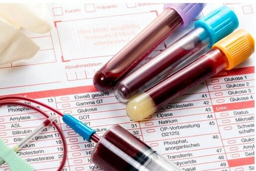
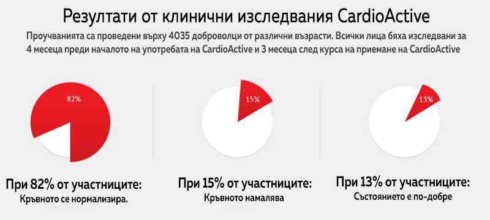

Експериментът, който промени живота ми. Справих се с хипертонията и съм благодарен на организаторите на проучването
Преди да бъде пуснато в продажба, всяко лекарство трябва да бъде подложено на клинични изследвания. Но малко хора разбират как се случва и с какви причини се ръководят техните участници. Всички подробности ни каза 52-годишният Константин, който в продължение на 10 месеца участва в проучването на ново средство против хипертония.

ПРЕДУПРЕЖДЕНИЕ! В края на статията ще намерите информация за ново революционно средство, което ефективно се бори с хипертонията.
— Добро утро, Константин! Кажете ни как се съгласихте да участвате в проучването? Защо избрахте средство против хипертония?
— Добро утро! Отговорът е прост: съгласих се да изследвам препарата, защото съм хипертоник. И открих това случайно. Исках да тичам полумаратон (21 километра) и трябваше да получа разрешение от терапевт. Разбира се, не ми позволиха да бягам. Също така, той ми каза, че съм имал високо кръвно налягане от годините. А аз през цялото време си мислех, че главоболието и постоянната умора са свързани с тежката ми работа!
Бях на 46 години по това време. Преди да започна проучването, приемах различни видове лекарства всяка сутрин в продължение на 8 години. Кръвното ми налягане варира от 140/80 до 170/100 mmHg.
Много хора живеят така и не се оплакват, но аз се чувствах инвалид. На мен, като човек със здрави стави, ми беше забранено да бягам! Освен това бях депресиран от идеята да отровя тялото си с лекарства от хипертония до края на живота си. Освен това, те дори не ми помагат толкова.
— Как разбра, че не помагат?
— Често ме болеше тила, имах остра болка в очите, че дори едвам гледах. И така един ден почувствах внезапна силна болка в сърцето, гадене и замаяност. Беше си хипертонична криза..
Отидох в болницата със систолично налягане 180, едва ме спасиха. Точно лекарят, който ме върна към живота, предложи да участвам в изследването на средство срещу високо кръвно налягане.
— Веднага ли се съгласи? Колко безопасна е тази процедура?
— Разбира се, че в началото имах съмнения. Но те подробно ми обясниха всички рискове и етапи на процедурата. Те казаха, че преди да преминат към проучвания върху хора, продуктът е тестван в лаборатория върху човешки клетъчни култури и мишки. Те казаха, че те най-вече се интересуват от успеха. Освен това всеки участник, който е подписал формуляра за съгласие, задължително получава застраховка, която може да покрие всички причинени щети. Но най-важното беше това, което предизвика моето доверие и ме убеди да участвам. Това беше 100% естественият състав на препарата.
— Когато се съгласихте, веднага започна изследването?
— Проучването започна след 4 месеца. Отне ми много време за различни тестове, анализи и т.н. направиха ми електрокардиограма, измериха няколко пъти кръвното налягане, взеха ми проби от кръв и урина, измериха височината и теглото. Напълно контролираха състоянието на тялото ми и здравословното ми състояние като цяло по време на експеримента. Две седмици по-късно на мен и на другите доброволци се обадиха лекарите и казаха, че сме в третата фаза на изследванията.
— Какво означава `трета фаза`?
— В първата фаза на изследването върху здрави доброволци се определя как средството се понясе от хора. Във втория: дозата се проверява за пациенти. В третия етап: ефективността на препарата се тества върху стотици пациенти и се прави съвместно сравнение с плацебо или аналози.
— Значи не си знаел, какво ще ти дават?
— Да, това е основната идея на изследването. За щастие се озовах сред тези, които приемаха лекарството.
— Как мина проучването?
— Необходимо е да се вземат 15-20 капки два пъти дневно в продължение на 1,5 месеца. Първият месец всички са хоспитализирани за един или два дни всяка седмица, и още веднъж когато изследванията приключат. През останалото време трябваше ясно да спазваме всички предписания на лекарите: да ограничим употребата на мазни храни, да не консумираме алкохол, да не пушим и т.н. Освен това е необходимо да се измерва кръвното всеки ден сутрин и вечер, както и да се посочат всички симптоми в специално приложение.
В дните, когато бяхме в болницата, бяхме редовно преглеждани, измерваха кръвното ни налягане и вземаха кръв и урина. Понякога не ни хранеха сутрин и ни оставяха гладни до обяд: това беше трудно. В 7 часа сутринта, 30 минути преди закуска, беше първият прием на капки и 15 минути по-късно правиха кръвни тестове и измерваха налягането.
— Дали при вас капките помогнаха? Как се промени състоянието ви?
— Въпреки страховете ми, бях добре. След втората седмица вече нямах болка в задната част на врата и кръвното не надвишаваше 140. След един месец дискомфортът в сърцето вече го нямашезрението се подобри и напрежението в очите изчезна. Недостигът на въздух след физическо натоварване също изчезна. И след 1,5 месеца кръвното налягане се стабилизира на 125/75, започнах да спя добре и се чувствах пълен с енергия.
Опасявах се, че след завършване на цикъла на прием, високото кръвно налягане ще се върне отново. Но минаха повече от 3 месеца и се чувствам здрав!
— Знаете ли името на продукта, който сте тествали?
— Да, капки на базата на 100% натурални растителни екстракти
— Плащали ли са ви да участвате в изпитанието?
— Не, нищо не ми е плащано. Само участниците в първия етап получиха пари. Но компанията е покрила всички разходи за транспорт, храна, тестове и престой в клиниката. Но не се оплаквам! Имам нещо, което не може да се купи с пари - здравето ми!
ЕКСПЕРТЕН КОМЕНТАР

Божидап Финков,
кардиолог, един от организаторите на фаза III на клиничните изследвания на
Високото кръвно налягане е сериозно заболяване, което засяга сърдечно-съдовата система, мозъка и бъбреците и повишава риска от миокарден инфаркт, инсулт и бъбречна недостатъчност. Обикновено хипертонията е почти асимптоматична и се диагностицира, когато усложненията започват да се появяват в други органи.
Обикновено пациентът трябва да приема 2 или повече лекарства против хипертония през целия си живот. Такава терапия често е придружена от странични ефекти и допълнително влошава здравословното състояние на пациента.
Капките са създадени под формата на моноремедиация, която не изисква приемане на допълнителни продукти, тъй като има всички необходими свойства::
— подобрява еластичността на съдовете;
— има кумулативен ефект;
— намалява нивата на лошия холестерол и предотвратява намаляването на добрия холестерол;
— има вазодилатиращ ефект;
— нормализира работата на сърцето;
— премахва излишната сол и вода от тялото.
Капките имат уникален растителен състав-екстракти от глог, хмел, хвощ, жълт кантарион и липови цветя. Полезните флавоноиди имат благоприятен ефект върху тъканите и клетките. По време на продължително проучване открихме, че съставките на капките имат комплексен лечебен ефект върху съдовете и капилярите: подобряват работата на сърцето и нервната система, и повишават мускулния тонус.
Курсовият прием на капките укрепва стените на кръвоносните съдове, стабилизира налягането, елиминира нервността, задух, главоболие и шум в ушите. Настроението се подобрява и нормализира съня. Важно: цикъл с не само нормализира кръвното налягане, но също така предотвратява развитието на сърдечно-съдови заболявания: инфаркт, инсулт и др.
Боян Колев беше един от 4035-те доброволци на възраст между 19 и 70 години, които избрахме за клинично изпитание фаза III . Тази група тестваше нашите капки. Имаше и група, която тестваше аналози. Всички участници разбраха към коя група принадлежат, едва след като проучването приключи.
В продължение на 10 месеца внимателно наблюдавахме тяхното здравословно състояние, провеждахме тестове, измервахме кръвното по различно време и в различни обстоятелства: седнали на стол, стоящи, преди и след тренировка.
В резултат на проучването потвърдихме ефективността на и липсата на противопоказания. След 1 месец прием на продукта, 70% от участниците подобриха стойността на кръвното, което спадна до 135/80 mmHg. И след още 2 седмици вече 100% от лицата са достигнали нормалната стойност. Средното кръвно налягане е 125/75 mmHg. По този начин, 1,5 месеца след цикъла на , налягането е напълно стабилизирано и при ежедневни измервания винаги е било нормално, както при здрав човек. Няма странични ефекти.
Коментар от редакторите:
Хипертонията е сериозно заболяване, което не позволява на човек да живее пълноценен живот и с всяка година го приближава до смъртта. Ако имате проблеми с високото кръвно налягане, не губете време и пари за безполезни лекарства. Вземете капки, чиято ефективност вече е клинично потвърдена.

ВНИМАНИЕ: Искате ли да получите 50% отстъпка за капките ? За да направите това, трябва да: до (включително) да направите поръчка на официалния сайт За да отидете на сайта, кликнете върху бутона по-долу. Броят на опаковките на промоцията е ограничен!
РЕЗУЛТАТИТЕ ОТ НАШИТЕ ЧИТАТЕЛИ
«Благодарение на капките , сега имам богат и активен живот! След приемането на курса кръвното ми се нормализира и вече не ме притеснява»
Сергей Пенев
«Капките бързо нормализират кръвното! За мен това е огромно облекчение. Преди не можех да работя нормално и дори да си почивам. След курса с капките най-накрая се чувствам здрав човек!»
Калина С.
«Благодарение на капките най-накрая се сбогувах със скоковете в кръвното. Не съм ги имал от шест месеца. бе поръчан не от мен, а от жена ми и за това съм много благодарен именно на нея. Това промени живота ни към по-добро, и отново се чувствам здрав и уверен в себе си. Благодаря!»
Стефан Караянчев
Цветан Иванов, 53 години
Аз също участвах в това проучване. Здравейте, Боян! Сега съм добре така. Слабостта, главоболието, повишеното изпотяване изчезнаха, станах по-спокоен. Мога да препоръчам на други хипертоници, тъй като самият аз проверих това средство
Боян Колев, 52 години
Цветане, щастлив съм че си добре! И аз съм в отлично здраве! Най-накрая си изтичах маратона
Цветанка Манчева, 34 години
При майка ми има хипертония, поръчах и препарата. Да се надяваме че ще помогне.
Айнур, 41 години
Супер интересно! Винаги съм сакала да се вклуча в клинически изследвания такива
Владимир, 45 години
е най-доброто средство за стабилизиране на кръвното на целия пазар. Деда ми и баща ми успяха накрая и те да се излекуват с помощта му!!
Динко Петков, 56 години
Иска ми се да бях чувал за това проучване ... но сега ще участвам в моя личен домашен експеримент :) вече поръчах тези капки
Малинка, 62 години
Казаха ми, че имам високо кръвно налягане след преглед от офталмолог. Оказа се, че това е причината за влошеното ми зрение... Първо взех две лекарства срещу хипертония, а след това трето даже, но не чувствах никакво подобрение бе. Пия само 2 седмици и вече съм значително по-добре: спя спокойно и главоболието е изчезнало и така
Виктор Петров, 59 години
УРА! Направо ги поръчах и то с отстъпката! Чакам да дойдат до 2 дни и да видим
Светлана П., 48 години
Баща ми почина от сърдечен пристъп и при мен има проблем с кръвното, страх ме е от тва. Благодаря на производителя на , че намери нов начин за спасението ни!
Кристина, 37 години
Интересна е информацията. Ще е хубаво да се препоръчва на колегите този препарат, на онези които се мъчат с високото кръвно
Весела Г., 53 години
Аз пък вече съм слушала от лекари за полезните свойства на хмел, жълт кантарион и глог за пациенти с хипертония. Ще поръчам продукта ви, докато е на специална оферта.
Чочо Попиванов, 57 години
Съставът на капките е наистина добър. Хубавото е, че е напълно естествено и няма странични ефекти. Това е много важно при всяко лечение!
Поляна, 65 години
Тези капки имат кумулативен ефект, много е важно да завършите пълния курс, дори ако вече се чувствате здрави
Лиляна Гешева, 54 години
Това е точно онова лекарството, което търсех толкова дълго! Благодарение на удобния дозатор, капките са лесни за използване и имат приятен вкус. Но най-вече ми харесва ефектът им! Разделихме се с тонометъра и се чувствам с 15 години по-млада. Опитайте сами, за да сте сигурни в тяхната ефективност. Желая ви здраве!
© Copyright. Всички права са запазени.